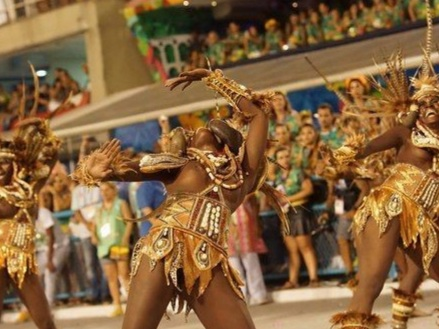
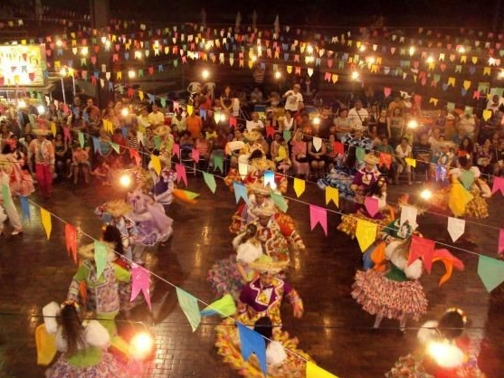

Qual é a origem do samba?
 O samba é um gênero musical com origem na cultura africana presente em nosso país. A primeira ligação sobre as origens do samba está relacionada com rodas de dança realizadas pelos escravos africanos no Brasil. Entre as danças praticadas estão o lundu, o coco, o fandango, entre outras. O que é o samba?O samba é um gênero musical típico de nosso país, e sua forma moderna consolidou-se nas comunidades afro-brasileiras instaladas no Rio de Janeiro, no começo do século XX. Surgido como uma dança de roda marcada pelo batuque, o samba transformou-se em um gênero de canção popular, sendo um dos mais populares do Brasil e um dos seus símbolos no exterior.

O que é a festa junina?Celebradas no Brasil desde pelo menos o século XVII, as Festa Juninas constituem a segunda maior comemoração realizada pelos brasileiros, ficando atrás apenas do Carnaval. De acordo com os historiadores, a festa tem origem no culto aos deuses pagãos, mas sofreu influências do catolicismo e hoje há forte associação com os santos católicos, como Santo Antônio, São João e São Pedro. Com a chegada dos portugueses, as festas, que já eram típicas na Europa, também desembarcaram no Brasil e aos poucos foram se misturando com elementos próprios do interior do país e das tradições sertanejas. Comidas típicas, danças e enfeites utilizados nas festas de hoje são uma junção de partes da cultura africana, europeia e indígena. |
© Manuely Silva Gomes | Turma B
Front- end